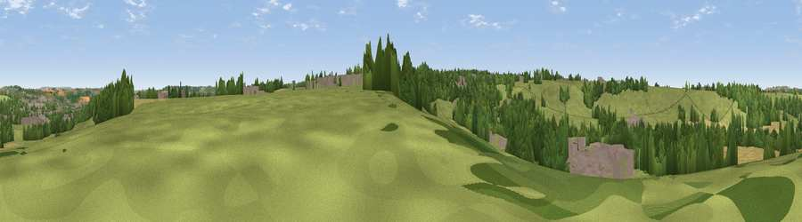

Viewpoint near Chilcompton
#39911 in England · top 81% of its area beats it · near ChilcomptonThe view, rendered

A 360° render of this exact spot computed from the terrain model, tree cover and land cover — summer colours, afternoon light, calibrated against photographs of famous viewpoints. Real trees, hedges and buildings will differ in detail.
The panorama
Grey silhouette: terrain skyline in each direction (720 bearings, Earth curvature and refraction included). Dashed green: skyline with trees (+15 m) and buildings (+8 m) as obstacles. Blue strip: how far the ground is visible on each bearing.
Where the view opens
Wedge length = distance to the farthest visible ground on that bearing (vegetation-aware). Rings at 10, 25 and 50 km.
What fills the view
49% grassland · 24% woodland · 18% cropland · 9% built-up
Angular shares of the visible panorama (visual magnitude), not map area. Landscape diversity 0.53 (0–1 Shannon).
Key numbers
More beautiful places nearby
The staircase of upgrades: each row has a higher view potential than everything closer. Driving times are estimates from straight-line distance, calibrated against real road routing — check an actual route before setting out.
| Place | Direction | Drive | Score |
|---|---|---|---|
| Folly Hill | N · 2 km | ~4 min | 37.6 |
| Viewpoint near Stratton on the Fosse | S · 2 km | ~5 min | 61.0 |
| Viewpoint near Oakhill | SSW · 6 km | ~14 min | 67.6 |
| Viewpoint near Oakhill | S · 7 km | ~14 min | 71.3 |
| Viewpoint near West Horrington | WSW · 9 km | ~18 min | 73.2 |
| Viewpoint near Wookey Hole | WSW · 11 km | ~22 min | 73.5 |
| Viewpoint near Milton Clevedon | S · 16 km | ~28 min | 73.9 |
| Viewpoint near Kelston | NNE · 16 km | ~28 min | 74.2 |
51.26901, -2.49984 · source: screening · position refined by local search. Computed location — check access rights before visiting.